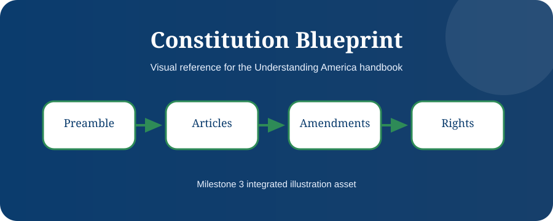

American Government Quick Reference Guide
This chapter is a concise reference for the entire structure of American government.
Learning Objectives
- Review branches at a glance
- Know who to contact
- Use quick facts for study

Three Branches
Legislative makes laws. Executive enforces laws. Judicial interprets laws. This simple framework organizes most civics questions.
Federal, State, Local
Federal government handles immigration, passports, defense, and currency. States handle driver licenses, state roads, education, and state law. Local governments handle many community services.
Who Do I Contact?
Citizenship goes to USCIS, passports to the Department of State, Social Security to SSA, federal taxes to IRS, driver licenses to PennDOT, and local roads to township or county offices.
Memory Map
House equals people, Senate equals states, President equals executive, Supreme Court equals constitutional review.

Chapter Summary
- This is the desk reference chapter.
- Use it before interviews or elections.
- Verify current officials before relying on names.
Key Terms
Constitution · Government · Rights · Citizenship · Federalism · Representation · Rule of Law
Review Questions
- What is the main idea of this chapter?
- How does this chapter connect to the Constitution?
- Why is this topic important for citizenship?
- Give one real-life example from this chapter.